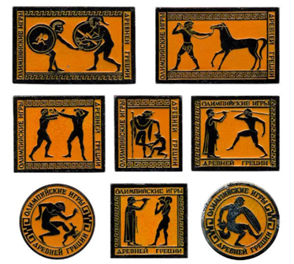
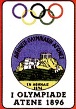

|  | As Olimpíadas surgiram na Grécia Antiga, por volta de 776 a. C., na cidade de Olímpia. Os Jogos Olímpicos da Antiguidade estavam associados a rituais religiosos e prestavam homenagens a deuses gregos, como Zeus. Após o fim das Olimpíadas antigas, em 393 d.C., os jogos voltariam a ocorrer somente 1503 anos depois. |  |
A primeira edição dos Jogos Olímpicos modernos foi realizada na cidade de Atenas, em 1896.
Participaram 14 países e 241 atletas homens, pois as mulheres eram proibidas de competir. Atletismo, ciclismo, esgrima, luta, ginástica, halterofilismo, natação e tênis foram as modalidades participantes. |
| Fonte: https://brasilescola.uol.com.br/educacao-fisica/olimpiadas.htm | |||